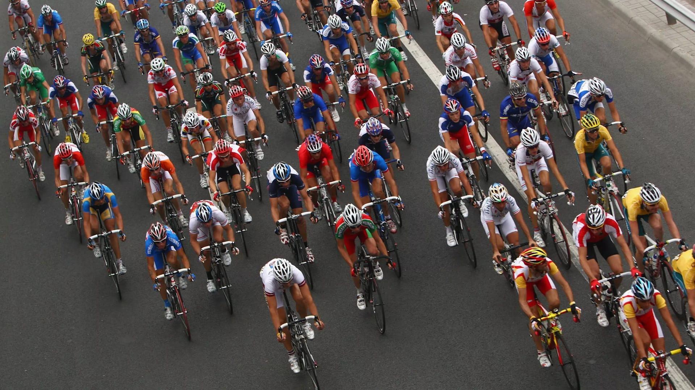
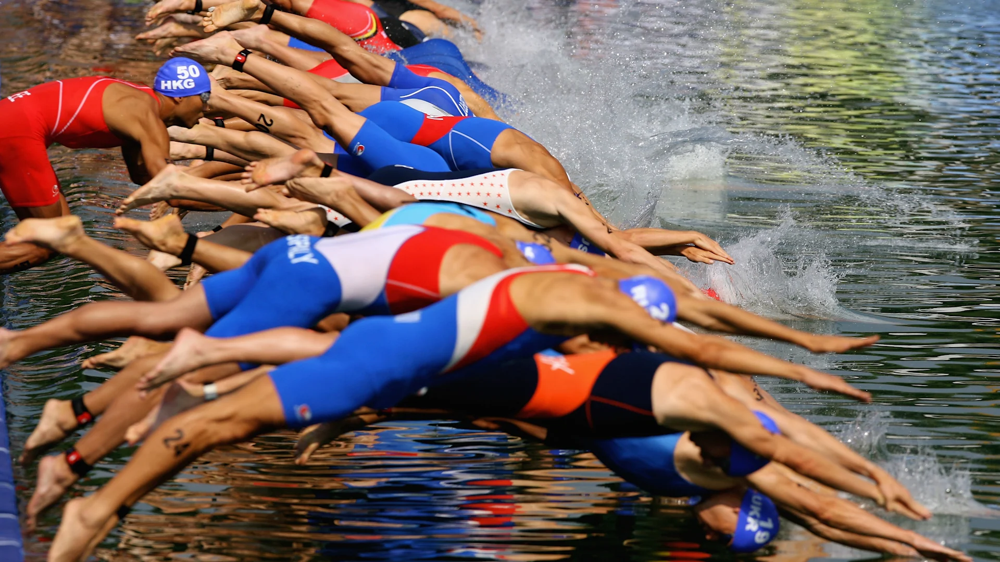
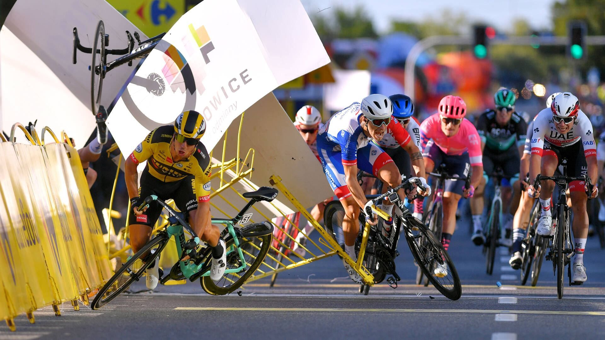
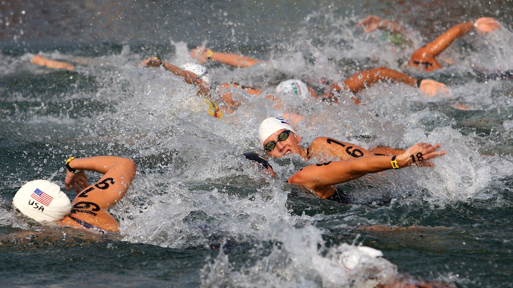
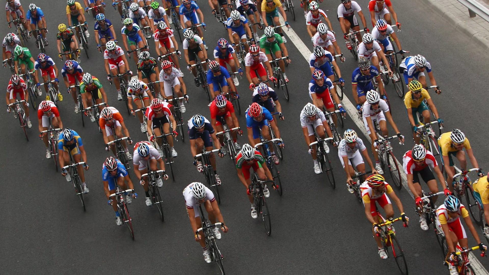
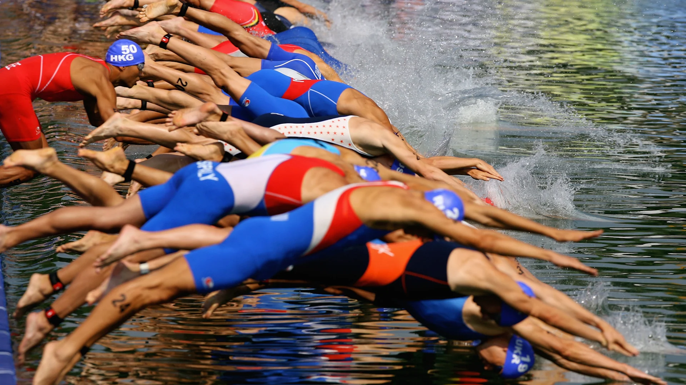
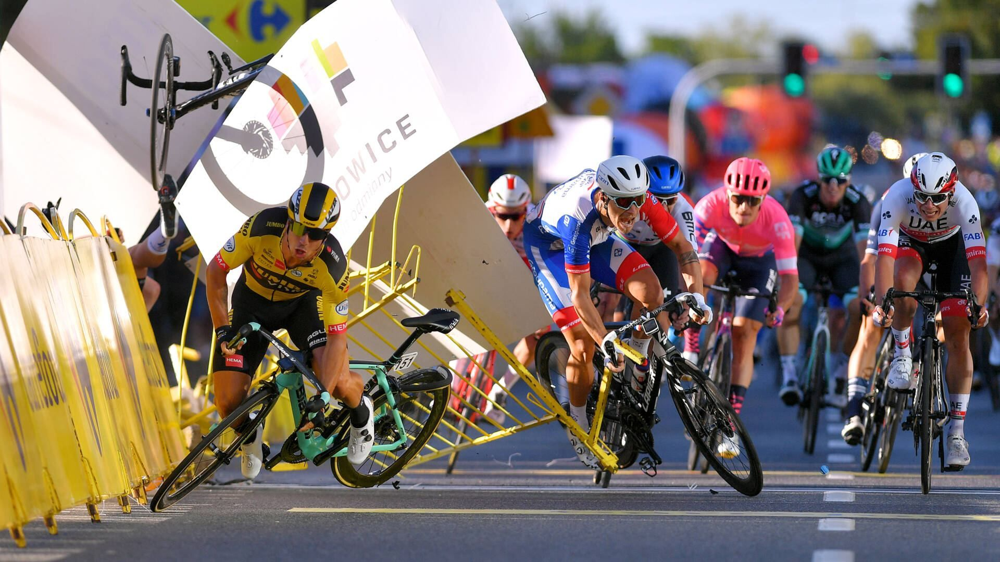
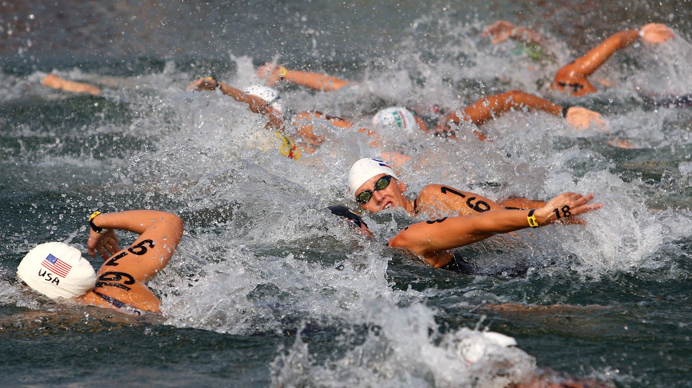
⬆
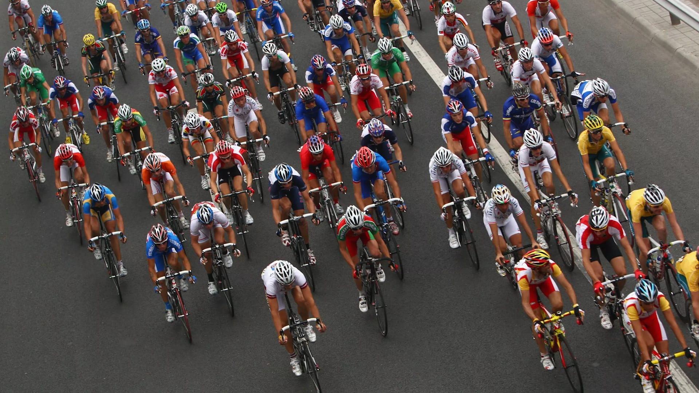
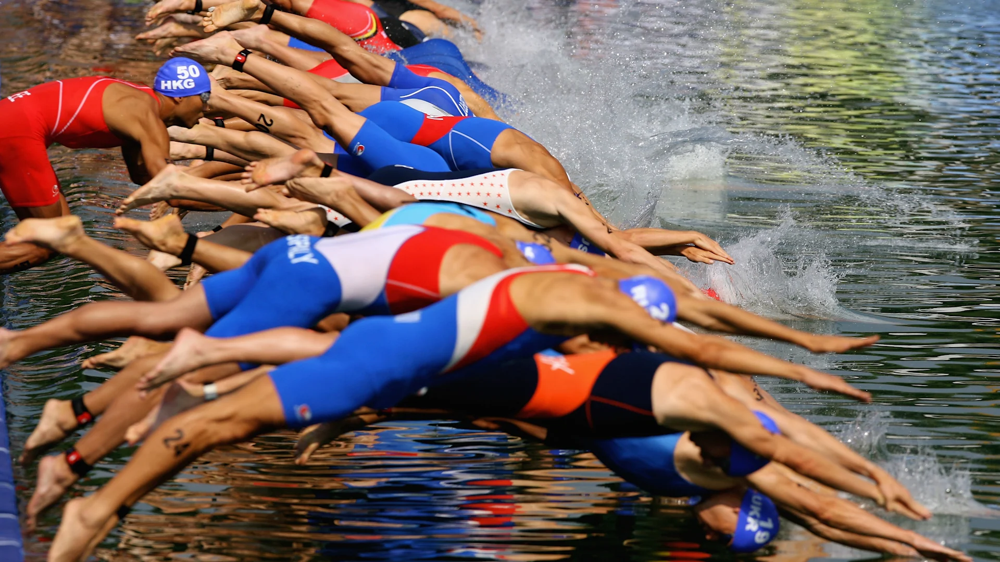
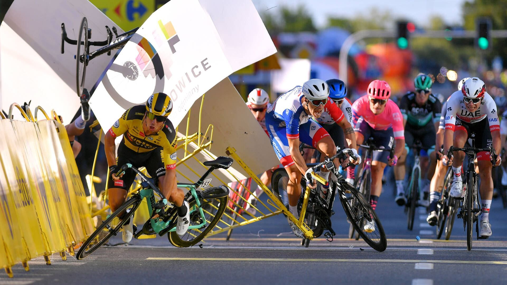
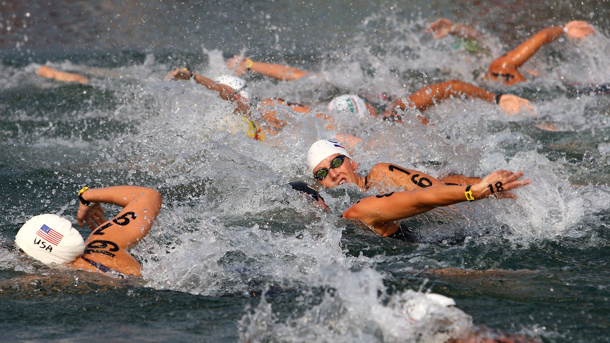
Тріатлон (від грец. τρεις — три і αθλος — змагання) — олімпійський вид спорту, який включає у себе три складові: плавання, їзду на велосипеді та біг.
Існує кілька видів триатлону:
У 1994 році під час чергової сесії МОК в Парижі оголосили про включення триатлону до програми Олімпійських ігор. Президент МОК процитував слова Кубертена, сказані ним ще у 1875 році: «Нам потрібний вид спорту, який скомпонував би плавання, їзду на велосипеді і біг, популярні сучасні динамічні види спорту, щоб завдяки їм відчувати олімпійський дух чесної гри, вправність та пристрасть».
Рухалися до цієї мети поступово. Прихильники здорового способу життя вважали, що найлегший і найдешевший спосіб застерегти себе від проблем зі здоров'ям — це почати бігати. Особливо біг для здоров'я став популярним у Новій Зеландії та Америці.
У 1971 році колишній член всеамериканської студентської команди Джек Джонстон у віці 35 років, щоб набути колишню юнацьку стрункість і легкість у рухах став учасником любительських бігових стартів, які проходили на околицях Сан-Дієго. В 1973 році Джек взяв участь у старті оригінального формату під назвою «День народження Дейва Пейна», який уже другий рік проводив 51-річний рятівник, розпочинаючи змагання з бігу на 4,5 км та завершуючи його короткою плавальною дистанцією (близько 250 м). Серед більше ніж 100 учасників Джонстон фінішував 12-м. Це було для нього великим сюрпризом, оскільки в більшості стартів він знаходився у списках наприкінці протоколу. Колишній плавець вирішив організувати змагання в подібному форматі, але збільшивши при цьому плавальну дистанцію. «Цікаво, як багато бігунів вміють плавати так, як я вмію бігати?» — подумав тоді Джек.
Джонстон звернувся в місцевий клуб бігу з проханням, щоб для його «біатлону» знайшли містечко в календарі змагань. Дон Шанахан, у якого також були подібні ідеї, запропонував Джеку включити в змагання ще велоетап. Той охоче погодився, і соратники збагатили календар бігового клубу Сан-Дієго новим стартом, а англійську мову новим словом — triathlon.
25 вересня 1974 року о 17:45 відбувся перший старт з триатлону. Учасники послідовно долали 5 миль на велосипеді, 6 миль бігом та 500 ярдів плаванням. Запрошувались усі охочі з власними велосипедами. Нагороджувались перші п'ять, які фінішували. Переможцем став рятівник Білл Філіпс з результатом 55.44.
Д.Джонстон та Д. Шанахан підтримували цей проект майже десять років, до 80-х років.
Чергова неймовірна ідея в невгамовних ентузіастів народилася на вечірці за підсумками щорічної бігової естафети навколо острова Оаху (Гавайські острови, США). На цьому популярному масовому змаганні команди з 5-ти чоловік долали 214 км. Фахівці американських клубів бігу та плавання часто сперечалися на тему, який вид спорту сприяє кращій підготовці. Після того, як старший офіцер флоту США Джон Коллінз повідомив, що найкращим спортсменом світу є Едді Меркс, видатний голландський велосипедист за найвищим зафіксованим МПК згідно з публікацією в найпопулярнішому американському спортивному журналі, ним було зроблено висновок, нібито саме велосипедисти найбільш підготовлені атлети.
Щоб визначити, хто ж все-таки сильніший, він запропонував об'єднати разом три відомих на Гаваях марафонські змагання. Коллінз мав на увазі океанські запливи «Бурхливі води Вайкікі» (2,4 милі, або 3,8616 км), велогонка «Навколо Оаху» (180 км) та марафон Гонолулу (42,195 км). Більшість тоді вирішили, що Джек пожартував на вечірці, але він публічно заявив, що наступного року особисто організує подібний старт, підкресливши, що всіх, хто фінішує, можна буде назвати «залізним чоловіком».